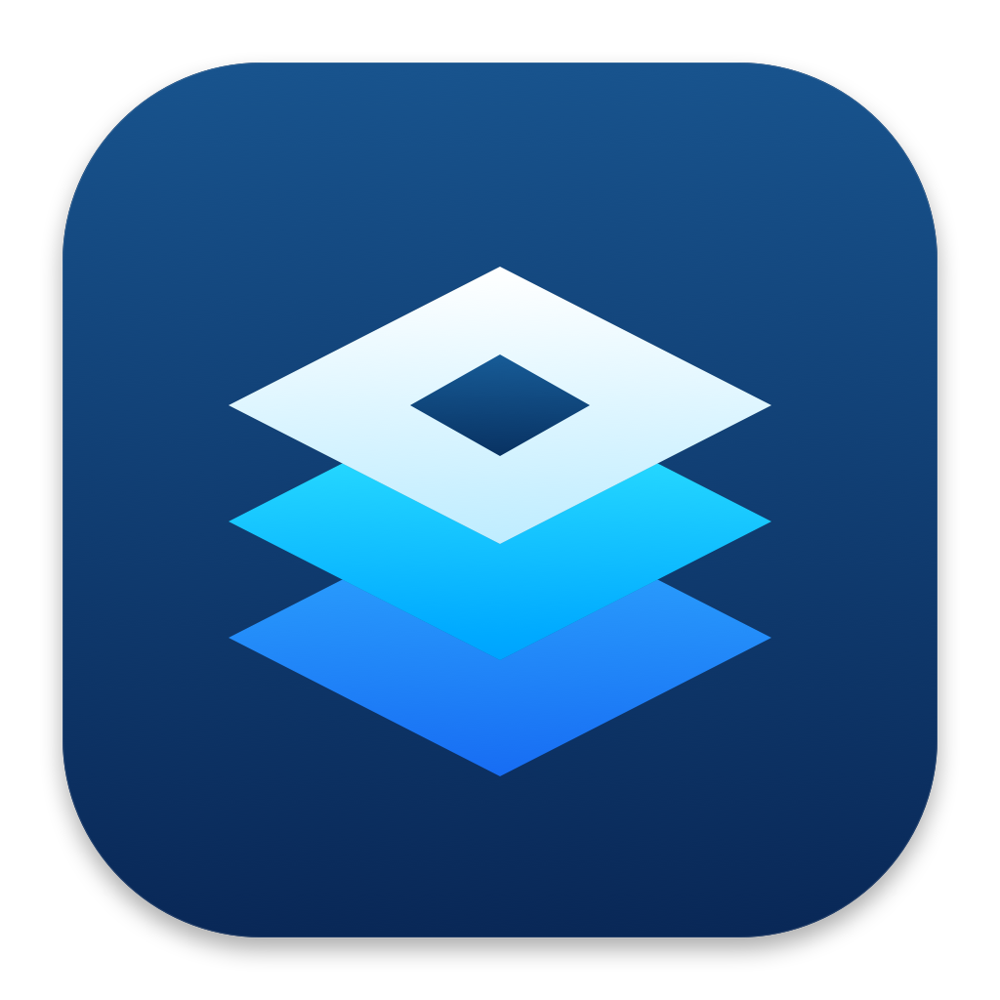

Bring your alts.
Save accounts, make groups, and launch just the ones you want.

MacBloxAll your Roblox accounts, in one little Mac app. Launch together, split into different games, and keep things organized.
Download for MacmacOS 14+ · Apple Silicon (M1 or newer)
Free & open sourceA little preview. The real action happens in the app.
Save accounts, make groups, and launch just the ones you want.
Same game, different games, or a public or private server invite.
Queue controls, running clients, and a global FPS preference.
No complicated setup.
Grab the Mac app using the blue button above.
Move MacBlox into Applications. Install the official Roblox app there too.
Sign in, paste a game or private invite, and select your alts with Command-click.
Still a little work in progress. This build isn’t Apple-notarized yet. If macOS blocks it, look for Open Anyway in Privacy & Security. Only open a copy you trust. Release notes